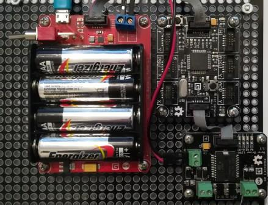

Version: 0.9.0
MotorDriverL298 is connected as followed on Cerberus:

| MotorDriverL298 | Mainboard |
|---|---|
| Socket Type P | Socket 4 |
Don't forget to connect power source for MotorDriverL298 (red and black wire on picture). Motor is connected on M1+ and M1- connector.
using System.Threading;
using Bauland.Gadgeteer;
using GHIElectronics.TinyCLR.Pins;
namespace TestMotorDriverL298
{
class Program
{
static void Main()
{
// MotorDriverL298 connected on Socket 4 (Type P) of FEZ Cerberus mainboard.
MotorDriverL298 motorDriverL298 = new MotorDriverL298(FEZCerberus.GpioPin.Socket4.Pin6,
FEZCerberus.GpioPin.Socket4.Pin7, FEZCerberus.PwmPin.Controller3.Socket4.Pin8,
FEZCerberus.PwmPin.Controller3.Socket4.Pin9, FEZCerberus.PwmPin.Controller3.Id, FEZCerberus.PwmPin.Controller3.Id);
while (true)
{
var motor = MotorDriverL298.Motor.Motor1;
motorDriverL298.SetSpeed(motor, 0.7);
Thread.Sleep(2000);
motorDriverL298.SetSpeed(motor, 0.9);
Thread.Sleep(2000);
motorDriverL298.SetSpeed(motor, -0.75);
Thread.Sleep(2000);
motorDriverL298.StopAll();
Thread.Sleep(2000);
}
}
}
}